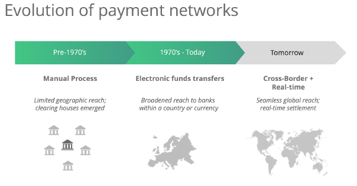
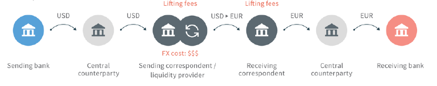
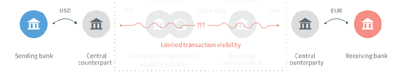
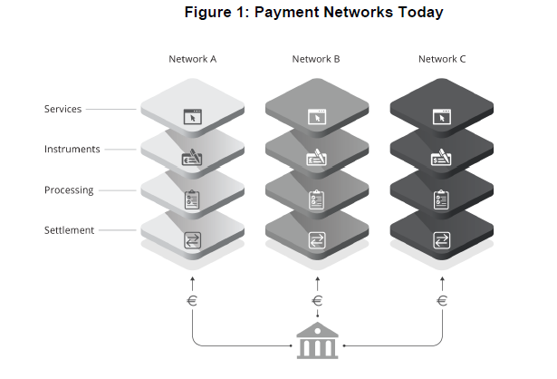
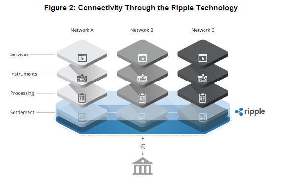
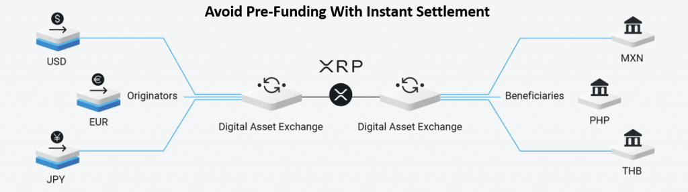
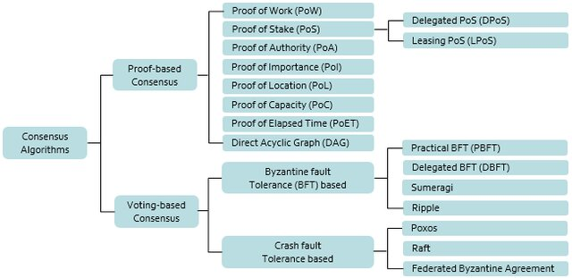
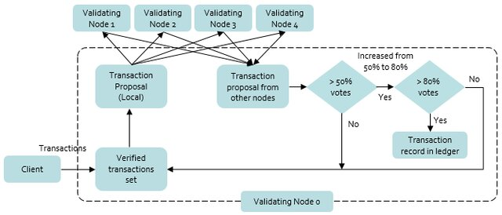
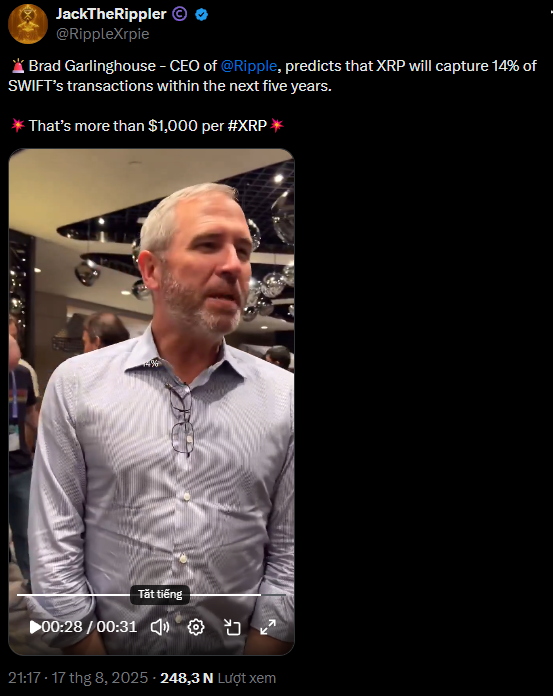

Can Ripple's Blockchain-Based Payment Network Replace SWIFT and Correspondent Banking in Cross-Border Payments?
Outline
Part I — Cross-Border Payments
- Overview & structure of cross-border payments
- Evolution of systems & industry challenges
Part II — The Two Networks
- SWIFT & Correspondent Banking
- Ripple's Ecosystem
Part III — Comparative Assessment & Conclusion
- Business Model Canvas (Ripple vs SWIFT)
- SWOT
- Impossible Triangle
- Network Effect (Metcalfe's & Reed's Law)
- S-curve & Adoption Curve
- Conclusion — answering the question
Cross-Border Payment Industry — Structure & Context
A cross-border payment is a transaction where the payer and payee are in different jurisdictions — moving value across currencies and national settlement systems that share no common ledger.
Cross-border payment flow

Payment System Layers
What each layer does, then where SWIFT is located and Ripple proposed as the new foundation.
How money actually moves — central banks & nostro/vostro

Nostro / vostro. A nostro account is the balance a bank holds in a foreign currency at another (correspondent) bank — "our money with you"; the mirror view from the other side is the vostro account — "your money with us". These pre-funded balances are what let two banks in different jurisdictions settle — and what traps liquidity.
Evolution & Challenges
From paper telex to instant rails and blockchain settlement — and the structural challenges the industry still faces.
Cross-border infrastructure evolved in layers across five eras. Each new system answered the limits of the previous one — yet none fully replaced its predecessor, the central pattern behind the thesis.

Challenges
Speed
3–5 days for a legacy wire versus seconds on a blockchain or instant scheme. Cut-off times and weekends compound delays.
Cost
Stacked intermediary fees plus the opportunity cost of pre-funded nostro liquidity. The recipient often receives less than was sent.
Opacity & exclusion
Senders cannot track funds in real time, and roughly 1.4B unbanked people are excluded from the correspondent system entirely.
Root cause: No shared global ledger.
Manual compliance
Payers assemble documentation & meet the receiving bank's compliance before a payment can complete.
No data channel
SWIFT messaging can't carry that information — receiving banks are left under-informed.
That causes relay processing: a payment is handed bank-to-bank, with fees deducted and currency converted at each hop.


Because settlement passes through intermediaries over several days, value is exposed at every hop. The taxonomy below comes directly from how central banks classify cross-border settlement risk.
| Risk | What it is | Driver |
|---|---|---|
| Principal risk (Herstatt risk) | Outright loss when an intermediary receives funds but fails to pass on the corresponding currency. | Non-atomic settlement across time zones. |
| Replacement-cost risk | Cost of replacing a failed payment with a new counterparty at a new market price. | Counterparty default mid-chain. |
| FX risk | Exchange rate moves during the gap between agreeing a rate and actually converting. | Settlement lag of up to 4 days. |
| Operational risk | Time and cost of manual error resolution, often requiring correspondent intervention. | Manual re-keying, mismatched standards. |
| Market-conduct risk | Liability when providers fail to disclose fees, terms, rights, or privacy. | Opacity toward the end customer. |



SWIFT & Corresponding Banking Network
How a SWIFT payment actually flows

SWIFT gpi — modernization
gpi (Global Payments Innovation, 2017): an overlay that fixed the loudest pain points — same rails, three upgrades.

Why gpi processes faster — the mechanisms
Same rails (correspondent / nostro accounts) — speed comes from a rulebook + tracking layer that strips out operational delay.
Ripple — Technology Solution & Business Model
A network (RippleNet) plus a digital bridge asset (XRP) on the XRP Ledger.
On-Demand Liquidity (ODL) — the real value proposition
ODL uses XRP as a momentary bridge between two fiat currencies, removing the need for pre-funded nostro accounts:

Ripple Protocol Consensus Algorithm


How a round works
1. Each validator collects candidate transactions into a "candidate set". 2. Validators exchange proposals with the peers on their trusted list (UNL). 3. Transactions agreed by enough peers are kept; others are deferred. 4. The threshold tightens over rounds until >= ~80% of the UNL agrees. 5. The ledger is declared validated. Total time: ~3-5 seconds. 6. No mining, no staking reward -> no computational/energy overhead.
The Unique Node List (UNL)
Each node operator chooses its own UNL — the set of validators it trusts. There is no single block producer and thus no single point of failure. Consensus emerges from overlapping trusted lists across the network's 150+ validators.
Validator Landscape — Default UNL Composition (~35 nodes)
| Category | Count | Examples | Trust basis |
|---|---|---|---|
| Ripple Inc. | ~5 | Ripple-operated nodes | Institutional |
| Universities | ~8 | MIT, Univ. Waterloo, Tokyo Tech | Academic |
| Exchanges / Fintech | ~10 | Bitso, XRPL Labs, Coil | Commercial |
| Community | ~12 | Independent operators | Reputational |
Transaction Throughput
Business Model Canvas
Ripple vs SWIFT, mapped across Osterwalder & Pigneur's 9 building blocks.
Two opposite incentive structures sit behind every module below:
Ripple
Key Partners
Key Activities
Key Resources
Value Proposition
Settles cross-border payments in ~3–5 seconds at near-zero cost by freeing liquidity otherwise pre-funded in nostro accounts.
Customer Relationships
Channels
Customer Segments
Cost Structure
Revenue Streams
*Excluded from Ripple's stated operating-revenue figures (e.g. the $1B 2026 run-rate target).
SWIFT
Key Partners
Key Activities
Key Resources
Value Proposition
Gives 11,000+ institutions in 200+ countries secure, standardized, near-universal messaging to instruct and confirm payments.
Customer Relationships
Channels
Customer Segments
Cost Structure
Revenue Streams
References
Osterwalder, A., & Pigneur, Y. (2010). Business model generation: A handbook for visionaries, game changers, and challengers. John Wiley & Sons.
Ripple. (2023). On-demand liquidity corridors. Ripple Labs Inc.
Schwartz, D., Youngs, N., & Britto, A. (2014). The Ripple protocol consensus algorithm. Ripple Labs.
SWIFT. (2024). SWIFT annual review 2024.
SWIFT. (2025). SWIFT annual review 2025.
SWOT
Strengths, weaknesses, opportunities and threats for each network.
| Ripple | SWIFT & Correspondent Banking | |
|---|---|---|
| S | Seconds-level settlement, near-zero fees, frees pre-funded liquidity (ODL), open-source, energy-efficient. | 200+ countries, 11,000+ banks, mature regulatory trust, 99.999% uptime, gpi tracking. |
| W | Partial centralization (Default UNL), for-profit + XRP-dependent, smaller reach, no native rich messaging. | 3–5 day settlement, high fees, opaque deductions, excludes unbanked, fraud exposure (Bangladesh 2016). |
| O | Emerging-market corridors, remittances, unbanked inclusion, ISO 20022 alignment, CBDC bridging. | ISO 20022 migration, gpi expansion, instant-payment interlinking, DLT settlement partnerships. |
| T | Regulatory uncertainty, crypto volatility, SWIFT gpi closing the gap, CBDCs & stablecoins. | Blockchain entrants, regional rails (SEPA, CIPS/SPFS), geopolitical fragmentation, CBDC networks. |
References
Harvard Business School. (2019). Ripple: The disruptor to the forty-year-old cross-border payment system. Platform/Digit.
National Bank of Belgium. (2024). Financial market infrastructures and payment services: SWIFT 2024.
SWIFT. (2025). SWIFT annual review 2025.
The Impossible Triangle
No payment system maximizes Speed, Security, and Decentralization at once.
The Impossible Triangle (or blockchain trilemma) holds that no network design can fully maximize Speed, Security, and Decentralization at once — each system picks two and sacrifices the third, a structural limit (CAP theorem, Byzantine fault tolerance) rather than an engineering gap future technology will close.
Which two of the three each system actually achieves — a check means the property is a design strength, a cross means it is the one sacrificed.
| System | Decentralization | Security | Speed | Optimizes for | Designed for |
|---|---|---|---|---|---|
| Bitcoin | ✓ | ✓ | ✗ | Decentralization, censorship resistance | Trustless store of value |
| Ethereum | ✓ | ✓ | ✗ | Programmability, decentralization | Decentralized app platform |
| Ripple (XRPL) | ✗ | ✓ | ✓ | Speed, low cost, finality | RTGS for financial institutions |
| SWIFT + Correspondent Banking | ✗ | ✓ | ✗ | Global reach, compliance | Standardized interbank messaging & settlement |
Note: SWIFT + correspondent banking sits slightly outside the pure blockchain triangle — its winning pair is global reach and regulatory trust rather than raw decentralization, which is why both decentralization and speed read as sacrifices here.
References
Buterin, V. (2014). Ethereum: A next-generation smart contract and decentralized application platform. Ethereum Foundation.
Lyu, J.-Y. (2026). Zeno's paradox in blockchain scalability: The impossible triangle of transaction speed, decentralization, and security. Journal of Sustainable Energy and Environmental Development.
Scott, S. V., & Zachariadis, M. (2012). Origins and development of SWIFT, 1973–2012. London School of Economics.
Network Effect
Metcalfe's Law & Reed's Law — why raw node-count explains so much of the incumbency gap.
Metcalfe's Law: V ∝ n(n−1)/2 | Reed's Law: V ∝ 2n
True linear scale, not log-compressed: RippleNet's bar stays a sliver because its value is roughly 1,349× smaller than SWIFT's — 44,850 links is genuinely tiny next to 60.4M.
References
Reed, D. P. (2001). The law of the pack. Harvard Business Review, 79(2), 23–24.
Ripple. (2023). On-demand liquidity corridors. Ripple Labs Inc.
Shapiro, C., & Varian, H. R. (1998). Information rules: A strategic guide to the network economy. Harvard Business School Press.
S-Curve & Adoption Curve
Where SWIFT & correspondent banking, Bitcoin, and RippleNet each sit on the technology-adoption S-curve — institution/user counts mapped against time since founding.
Technology Adoption Life Cycle (TALC)
References
CCN. (2024). Ripple vs SWIFT: Blockchain vs the banking behemoth.
Moore, G. A. (1991). Crossing the chasm: Marketing and selling high-tech products to mainstream customers. HarperBusiness.
Rogers, E. M. (2003). Diffusion of innovations (5th ed.). Free Press.
SWIFT. (2025). SWIFT annual review 2025.
Wikipedia contributors. (n.d.). Technology adoption life cycle. Wikipedia. https://en.wikipedia.org/wiki/Technology_adoption_life_cycle
Conclusion
Direct answer to: "Can Ripple's blockchain-based payment network effectively replace SWIFT for cross-border transactions?"
Short answer: Not a full replacement — but a genuine, partial challenger that forces SWIFT to evolve.

Why Ripple cannot fully replace SWIFT
Why Ripple still matters
"Replace" is the wrong verb. "Reshape" is the right one.
Confidence in this assessment
SWIFT remains dominant near-term
Ripple gains traction in specific corridors
Full replacement of SWIFT by Ripple
AI Disclosure
How AI (Claude) was used in preparing this final presentation, and what remained the author's responsibility.
This presentation was prepared by the author with assistance from an AI assistant (Claude). The author defined the research question, directed every step, made all final decisions on content and structure, and is responsible for the accuracy of the analysis and conclusions. AI was used as a drafting, research-support and formatting tool, not as the author of record.
| Task | How AI assisted |
|---|---|
| Building the format | Designed the interactive HTML structure, layout, navigation, theme, and reusable components (timeline, tables, canvas, figures). |
| Editing the presentation | Built, added, removed and restructured HTML sections on the author's instructions (cover page, merging sections, moving figures, fixing markup). |
| Co-developing & selecting ideas | Proposed the outline, framing, and analytical angles (Impossible Triangle, layered stack, SWOT); the author chose and refined which to keep. |
| Cross-checking data | Verified figures (settlement times, fees, throughput, availability) against the source documents and flagged inconsistencies. |
| Summarizing documents | Extracted and condensed key points from the SWIFT Annual Reviews (2024, 2025), academic papers, and the source slide deck. |
| Explaining terminology | Clarified domain terms (nostro/vostro, RPCA, ISO 20022, gpi, ODL, finality types) to ensure correct usage. |
References
Sources cited in this presentation.
Allied Market Research. (2023). Cross-border payments market: Global opportunity analysis and industry forecast, 2023–2032. https://www.alliedmarketresearch.com/cross-border-payments-market-A288119
Android Authority. (2017). What is Ripple? https://www.androidauthority.com/what-is-ripple-819806/
Buterin, V. (2014). Ethereum: A next-generation smart contract and decentralized application platform. Ethereum Foundation. https://ethereum.org/whitepaper
CCN. (2024). Ripple vs SWIFT: Blockchain vs the banking behemoth. https://www.ccn.com/education/crypto/ripple-vs-swift-blockchain-banking-behemoth/
European Payments Council. (2023). SEPA Credit Transfer (SCT) scheme. https://www.europeanpaymentscouncil.eu/what-we-do/sepa-credit-transfer
Finextra. (2018). Nostro, vostro and loro accounts: The clearing infrastructure. https://www.finextra.com
GoCardless. (2024). The SEPA zone: Which countries are part of SEPA? https://gocardless.com/guides/sepa/countries-sepa-zone
Harvard Business School. (2019). Ripple: The disruptor to the forty-year-old cross-border payment system. Platform/Digit. https://aiinstitute.hbs.edu/platform-digit/submission/ripple-the-disruptor-to-the-forty-years-old-cross-border-payment-system/
International Finance Bank LTD. (n.d.). SWIFT — Currency transfers — Banking services. https://www.if-bank.com/banking-services/currency-transfers/swift/
JackTheRippler [@RippleXrple]. (2025, August 17). [Tweet/video]. X. https://x.com/RippleXrpie/status/1957190110023127354
Lyu, J.-Y. (2026). Zeno's paradox in blockchain scalability: The impossible triangle of transaction speed, decentralization, and security. Journal of Sustainable Energy and Environmental Development, 2(1), e2724. https://journals.econsciences.com/index.php/JSEED/article/view/2724
National Bank of Belgium. (2024). Financial market infrastructures and payment services: SWIFT 2024. https://www.nbb.be/doc/ts/publications/fmi-and-paymentservices/2024/fmi-2024_swift.pdf
Osterwalder, A., & Pigneur, Y. (2010). Business model generation: A handbook for visionaries, game changers, and challengers. John Wiley & Sons.
Pandey, A. (n.d.). Payments, cross-border payments, SWIFT [Infographic]. LinkedIn. https://www.linkedin.com/posts/abhishek2601_payments-crossborderpayments-swift-activity-7464889095752888320-FvXk/
Preserving the obligatory passage point: SWIFT and the partial platformisation of global payments. (2024). ScienceDirect.
RedCompass Labs. (2024). Cross-border vs cross-chain payments. https://www.redcompasslabs.com/insights/cross-border-vs-cross-chain-payments/
Reed, D. P. (2001). The law of the pack. Harvard Business Review, 79(2), 23–24.
Ripple Labs. (2015). Ripple as an innovative solution to the ways we pay [Comment letter]. Submission to Department of Finance Canada.
Ripple. (2016). Ripple solutions guide (Version 2.0).
Ripple [@Ripple]. (2017, December 21). [Tweet]. X. https://x.com/Ripple/status/943932041266999296
Ripple. (2023). On-demand liquidity corridors. Ripple Labs Inc.
Robinson, G. (2023). Global networks of money and information at the crossroads: Correspondent banking and SWIFT. Global Networks.
Rogers, E. M. (2003). Diffusion of innovations (5th ed.). Free Press.
Sarwar, M. I., Maghrabi, L. A., Khan, I., Naith, Q. H., & Nisar, K. (2023). Blockchain: A crypto-intensive technology—A comprehensive review. IEEE Access, 11, 141926–141955. https://doi.org/10.1109/ACCESS.2023.3342079
Schmidt, J., & Acharya, A. (2022, September 19). It's all about the money (movement): Simplifying cross-border payments. Payall. https://payall.com/resources/insights/its-all-about-the-money-movement-simplifying-cross-border-payments
Schwartz, D., Youngs, N., & Britto, A. (2014). The Ripple protocol consensus algorithm. Ripple Labs. https://ripple.com/files/ripple_consensus_whitepaper.pdf
Scott, S. V., & Zachariadis, M. (2012). Origins and development of SWIFT, 1973–2012. London School of Economics. https://eprints.lse.ac.uk/46490/
Shapiro, C., & Varian, H. R. (1998). Information rules: A strategic guide to the network economy. Harvard Business School Press.
SWIFT. (2024). SWIFT annual review 2024. https://www.swift.com/about-us/swift-annual-review
SWIFT. (2025). SWIFT annual review 2025. https://www.swift.com/about-us/swift-annual-review
Thunes. (2024). SWIFT gpi cross-border payments. https://www.thunes.com/insights/learn/swift-gpi-cross-border-payments/
XRP Ledger. (2024). Transaction cost. XRP Ledger Documentation. https://xrpl.org/docs/concepts/transactions/transaction-cost